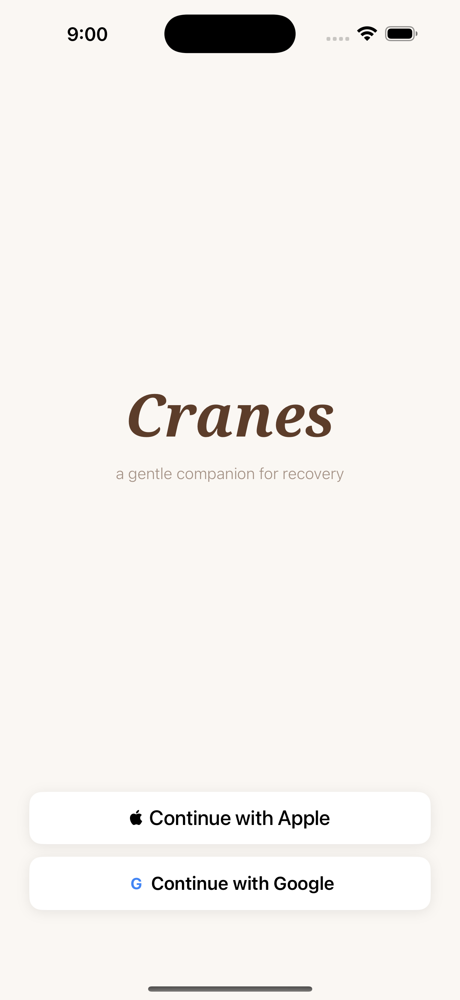
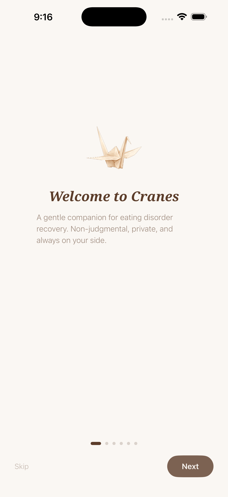
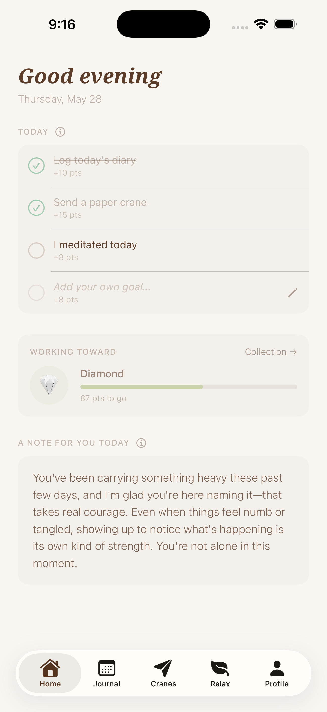
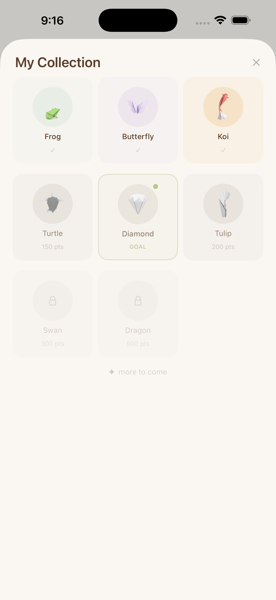
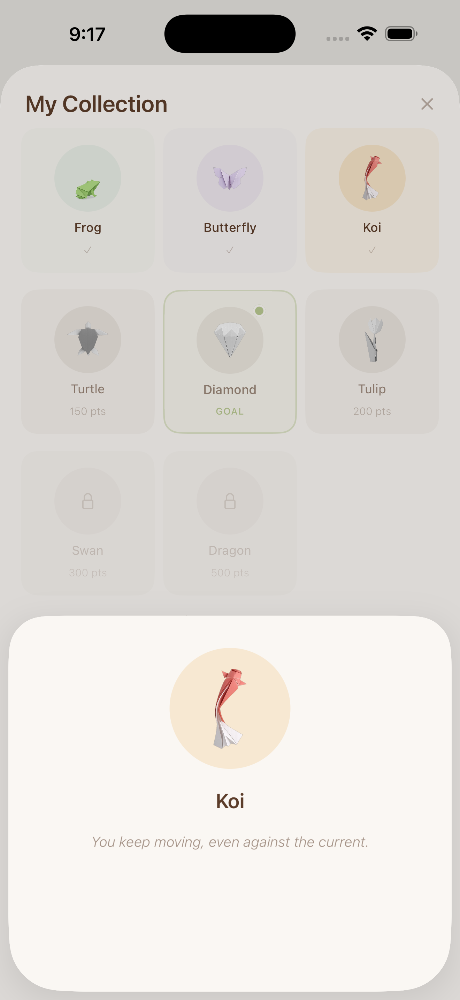
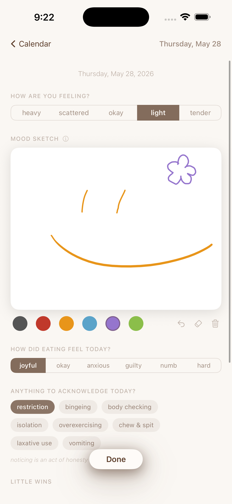
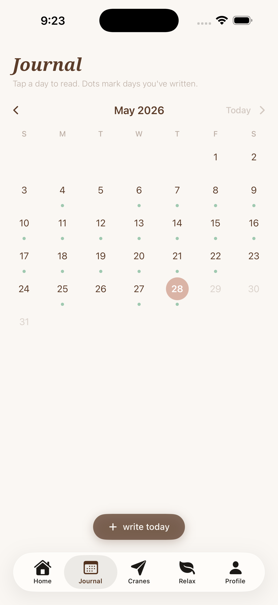
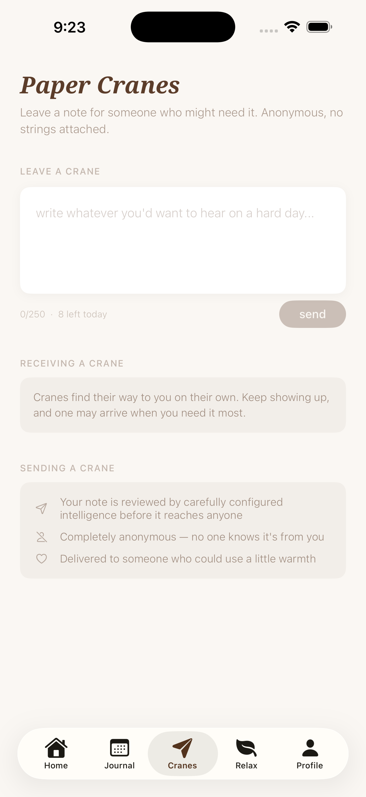
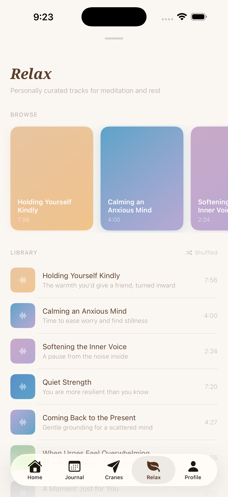
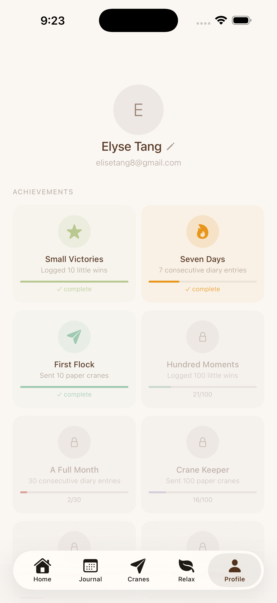

Cranes: ED Recovery
A mobile companion app for eating disorder recovery — designed, built, and shipped solo, with every decision run through a privacy-first, trauma-informed lens.
Cranes: ED Recovery is a companion app for people navigating eating disorder recovery, built solo end-to-end — UX design, engineering, and QA — around one filter for every decision: does this help recovery, or quietly work against it? That meant deliberately excluding calorie and weight tracking, keeping journaling private by default, and designing language and features to be non-judgmental throughout, with nothing that scores, ranks, or grades a user's day. The core social feature is moderated peer support: anonymous encouragement between users, screened by an AI-assisted content pipeline before it reaches anyone. Daily engagement centers on a personalized note system and a gamified origami collection, designed to encourage consistency without streaks, scores, or metrics-based pressure.










- Mobile UX design
- iOS
- AI-assisted content moderation
- Privacy-first architecture
- Trauma-informed design